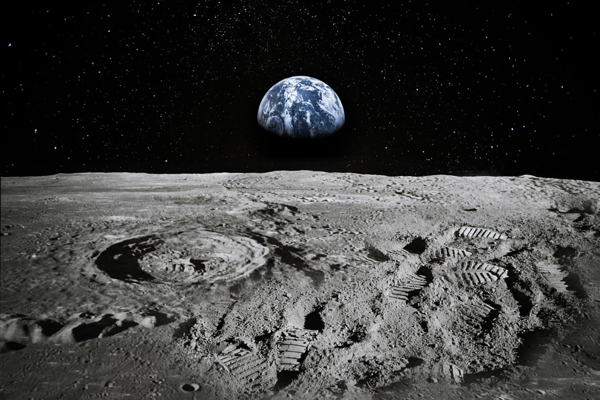
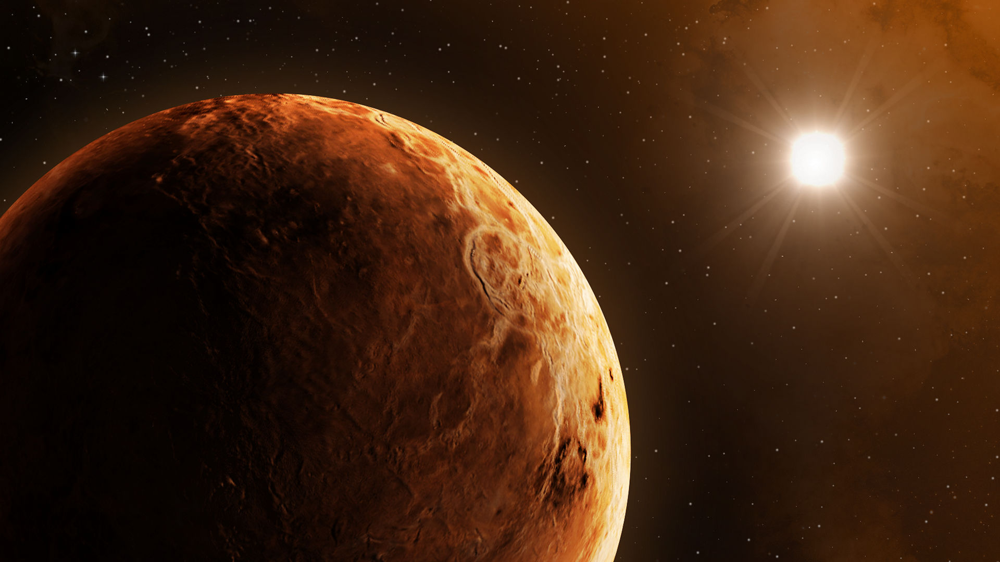

tudo sobre a terra
"Terra plana diz respeito a um conjunto de ideias defendidas por pessoas que acreditam que a Terra tenha o formato de um plano, limitado pelo Círculo Polar Ártico, e não de uma esfera. Alguns dos chamados terraplanistas creem também que a gravidade é uma farsa e que a Lua e o Sol encontram-se muito mais próximos da Terra do que se acredita." Veja mais sobre a Terra..
-

nosso planeta
24 de dezembro - Há 45 anos, os tripulantes da missão Apollo 8 fizeram a primeira viagem humana à Lua. Ao abandonar a órbita da Terra, o astronauta William Anders registrou uma imagem que ficaria marcada na história: 'Nascer da Terra', feita em em 24 de dezembro de 1968, que mostra o planeta surgindo parcialmente na sombra, como um nascer do Sol. A viagem, que fazia parte do Projeto Apollo, teve duração de seis dias e não levou o homem a pisar na Lua, mas a atingir a órbita do satélite natural nasa-comemora-45-anos-de-viagem-a-lua-com-foto-da-terra-vista-do-espaco.
-

planeta venus
O planeta Vênus, sendo o segundo em ordem de classificação a partir do Sol, é o mais quente do Sistema Solar. Ele possui características de tamanho, diâmetro e massa muito semelhantes às da Terra, mas não possui nenhum vestígio de formas de vida. Sua formação, assim como a da Terra, é composta por rochas diversas, com destaque para silicatos e basaltos.

sistema solar
O movimento retrógrado dos planetas Há muitos anos atrás, a humanidade percebeu que alguns corpos celestes se movimentavam com velocidades de módulos e sentidos diferentes em relação ao movimento coordenado das estrelas de fundo. Estes corpos passaram a ser chamados, em grego, de planetas “errantes”. E quanto mais se observavam esses planetas, mais peculiaridades surgiam. Por vezes, ao se observar o movimento desses corpos errantes que acontecia de Leste para Oeste, percebia-se que, com o passar dos dias eles se distanciavam de uma determinada estrela de referência. No entanto, em alguns momentos mais específicos, eles pareciam se aproximar dessa mesma estrela, executando um “movimento retrógrado” ou seja, um movimento oposto ao sentido natural do movimento de todas as estrelas vistas em uma mesma noite. O registro das posições relativas do planeta Marte, em relação às estrelas da constelação de Leão, feitas a cada 5 ou 7 dias de 28/10/2011 a 07/06/2012, mostra uma espécie de “movimento de laço”.